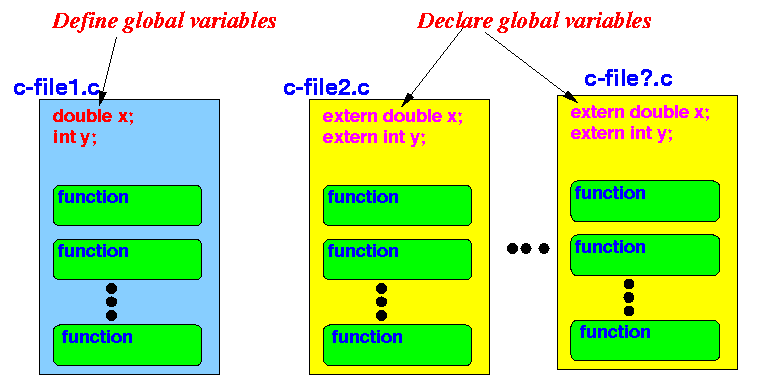
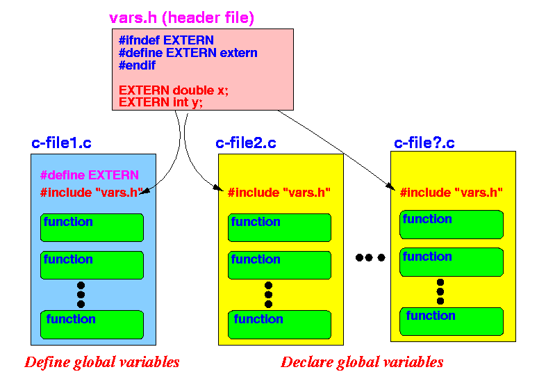

We want to achieve the following:
|
|  |
Important note:
|
|
|
Example:
| File: glob2.c | File: glob2.h |
|---|---|
int a, b;
float c, d;
void print()
{
printf( ">> a = %d, b = %d\n", a, b);
printf( ">> c = %f, d = %f\n", c, d);
}
|
// Prevent recursive include..... #ifndef h_glob_h #define h_glob_h void print(); // Function declaration #endif |
|
Summary:
|  |
|
cd /home/cs255000/demo/c/multiple-files
gcc -E h-glob1.c
# 10 #include "h-glob2.h" got processed to:
int a, b;
float c, d;
void print( );
gcc -E h-glob2.c
# 10 #include "h-glob2.h" got processed to:
extern int a, b;
extern float c, d;
void print( );
|